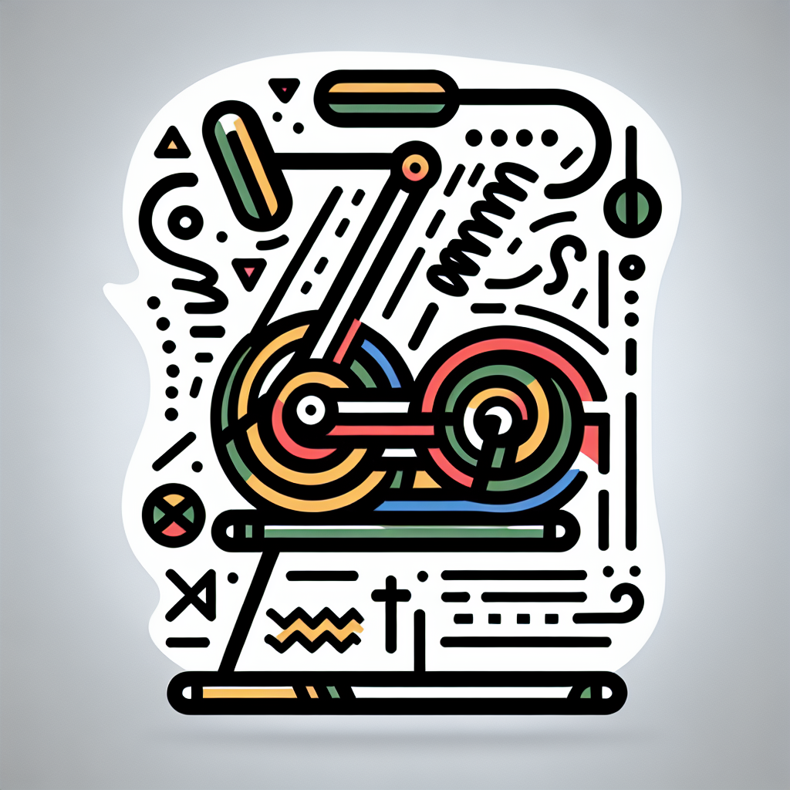

Le rôle des ressorts sur le MegaPro expliqué
Le rôle des ressorts sur le MegaPro expliqué
L'univers du fitness a toujours cherché des moyens innovants pour améliorer le bien-être et la performance de ses adeptes. Parmi ces innovations, le MegaPro du Studio Lagree se distingue par son approche unique du renforcement musculaire. Mais au cœur de cette machine révolutionnaire se trouve un élément clé : les ressorts. Plongeons dans le monde fascinant de ces ressorts et découvrons leur importance pour votre entraînement.
Les ressorts : Défibrillateurs de votre entraînement
Les ressorts du MegaPro ne sont pas de simples accessoires mécaniques. Ils sont l'âme de chaque séance d'entraînement. En modulant la résistance, ils permettent de cibler précisément les muscles que vous souhaitez renforcer, tout en préservant vos articulations.
- Personnalisation : Les ressorts vous offrent la possibilité d'ajuster la résistance selon votre niveau et vos objectifs. Que vous soyez débutant ou expert, chacun peut intensifier ou alléger son effort à loisir.
- Sécurité : Leur élasticité amortit les chocs, préservant ainsi vos articulations. C’est un avantage considérable pour ceux qui souhaitent s’engager dans une pratique régulière sans risque de blessure.
- Progression : Au fur et à mesure de votre progression, il est facile d’augmenter la difficulté de vos séances en ajoutant de la résistance, pour un challenge toujours renouvelé.
Le Principe de la Tension Constante
Contrairement à certaines méthodes d'entraînement traditionnelles, le MegaPro, grâce à ses ressorts, maintient une tension constante sur les muscles tout au long de l'exercice. Cette particularité permet un travail musculaire plus efficace et des résultats plus rapides.
- Équilibre musculaire : Avec une tension continue, chaque muscle est sollicité de manière uniforme, évitant ainsi les déséquilibres musculaires fréquents avec les poids libres.
- Endurance améliorée : La tension constante entraîne une fatigue musculaire progressive, idéale pour développer l'endurance musculaire.
- Stimulation musculaire accrue : En maintenant les muscles sous tension prolongée, vous stimulez davantage les fibres musculaires, favorisant une tonification plus rapide.
La Polyvalence des Exercices Lagree
Grâce aux ressorts du MegaPro, une incroyable variété d'exercices devient possible. Cette polyvalence est au cœur de la méthode Lagree, permettant de travailler l'ensemble du corps en une seule séance.
- Exercices pour le tronc : Renforcez votre sangle abdominale grâce à des mouvements de gainage et de torsion adaptés.
- Renforcement des jambes : Lancez-vous dans des fentes et des squats assistés par ressort, pour un travail en profondeur des cuisses et des mollets.
- Flexibilité et posture : Les mouvements doux et fluides favorisés par les ressorts améliorent la mobilité et corrigent la posture.
Pourquoi DOZ est l'endroit rêvé pour tester le MegaPro
Chez DOZ, nous avons créé un espace où le sport de haute intensité et la détente cohabitent harmonieusement. Nos coachs sont formés pour tirer le meilleur des ressorts du MegaPro, vous guidant avec bienveillance dans la découverte de cette méthode.
Après l'effort, le réconfort n'est jamais loin. Notre Coffee Shop vous propose des délices culinaires locaux, de saison, ainsi qu'un café de spécialité prêt à éveiller vos sens.
Conclusion : Laissez-vous séduire par l'expérience MegaPro à DOZ
Les ressorts du MegaPro sont bien plus qu'un simple composant mécanique. Ils sont le levier essentiel qui transforme chaque séance en une expérience unique de développement personnel et physique. Que vous souhaitiez tonifier votre corps, augmenter votre force ou simplement bouger en toute sécurité, le MegaPro est prêt à vous propulser vers vos objectifs.
Prêt à rejoindre la communauté DOZ ? Venez ressentir la magie des ressorts par vous-même et réservez dès maintenant votre cours au Studio Lagree. Pour un moment de réconfort post-entraînement, nos portes sont grandes ouvertes pour vous accueillir avec un sourire et un bon café. À très bientôt sur la côte basque !